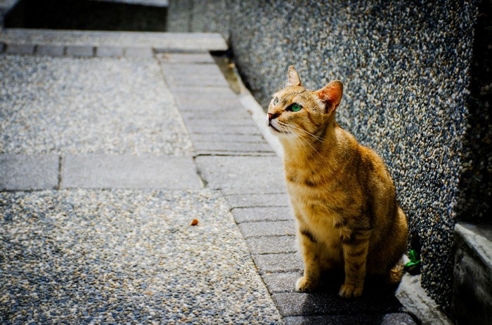

印象深刻的台湾火车站
印象深刻的火车站，毫无疑问是台湾的 瑞芳!台湾的火车文化，只有你去过之后才会
感觉到如此之特别。瑞芳火车一日游包括：途径猴垌、十分、菁桐、平溪四个地方，每个地方都各有特色。
第一站是 猴垌，乍一听名字是不是这地方跟猴子有关？下了火车才知道，这里是猫的天堂，一出站
台你就能发现好多只猫，有的慵懒的躺着，有的上蹿下跳盯着来来往往的游人。在村子里，猫的数量
更甚，村里的人爱猫，他们对猫的细致呵护到了日常的点滴，如在高的墙上订了一排类似梯子的扶手，
方便喵咪们攀爬，亦或是猫爪子状的“猫行道”，如在高的墙上订了一排类似梯子的扶手，
方便喵咪们攀爬，亦或是猫爪子状的“猫行道”，最让我们佩服不已的则是放置在火车候车区旁的一些
石块，期初我们纳闷这石头是干嘛的放在这，后来才知道，有些猫咪会出现在铁轨上，为了提醒猫咪们
躲开火车，专门供人扔石头提醒猫咪们让开，看到这是不是已经被这村子里的人感动了呢？人与猫可以
在这里和谐的相处，这里是猫的天堂。更多...